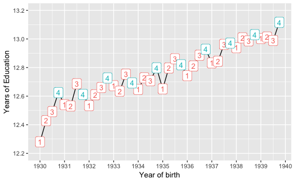
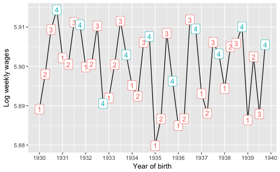

9 Quarter of Birth and Returns to Schooling
This replicates Tables 6.4 and 6.5, and Figures 6.1 and 6.2 of Mastering ’Metrics. These present an IV analysis of the returns to schooling using quarters of birth (QOB) as instruments for years of schooling (Angrist and Krueger 1991).
library("AER")
library("sandwich")
library("lmtest")
library("tidyverse")
library("broom")Load twins data.
data("ak91", package = "masteringmetrics")Some cleaning of the data.
ak91 <- mutate(ak91,
qob_fct = factor(qob),
q4 = as.integer(qob == "4"),
yob_fct = factor(yob))Table 6.4. IV recipe for returns to schooling using a single QOB instrument. Regress log wages on 4th quarter.
mod1 <- lm(lnw ~ q4, data = ak91)
coeftest(mod1, vcov = sandwich)
#>
#> t test of coefficients:
#>
#> Estimate Std. Error t value Pr(>|t|)
#> (Intercept) 5.89827 0.00136 4329.13 <2e-16 ***
#> q4 0.00681 0.00274 2.48 0.013 *
#> ---
#> Signif. codes: 0 '***' 0.001 '**' 0.01 '*' 0.05 '.' 0.1 ' ' 1Regress years of schooling on 4th quarter.
mod2 <- lm(s ~ q4, data = ak91)
coeftest(mod2, vcov = sandwich)
#>
#> t test of coefficients:
#>
#> Estimate Std. Error t value Pr(>|t|)
#> (Intercept) 12.74731 0.00661 1929 < 2e-16 ***
#> q4 0.09212 0.01316 7 2.6e-12 ***
#> ---
#> Signif. codes: 0 '***' 0.001 '**' 0.01 '*' 0.05 '.' 0.1 ' ' 1IV regression of log wages on years of schooling, with 4th quarter as an instrument for years of schooling.
mod3 <- ivreg(lnw ~ s | q4, data = ak91)
coeftest(mod3, vcov = sandwich)
#>
#> t test of coefficients:
#>
#> Estimate Std. Error t value Pr(>|t|)
#> (Intercept) 4.955 0.358 13.85 <2e-16 ***
#> s 0.074 0.028 2.64 0.0083 **
#> ---
#> Signif. codes: 0 '***' 0.001 '**' 0.01 '*' 0.05 '.' 0.1 ' ' 19.1 Table 6.5
Regression Estimates of Returns to Schooling using Quarter of Birth Instruments
Column 1. OLS
mod4 <- lm(lnw ~ s, data = ak91)
coeftest(mod4, vcov = sandwich)
#>
#> t test of coefficients:
#>
#> Estimate Std. Error t value Pr(>|t|)
#> (Intercept) 4.995182 0.005074 984 <2e-16 ***
#> s 0.070851 0.000381 186 <2e-16 ***
#> ---
#> Signif. codes: 0 '***' 0.001 '**' 0.01 '*' 0.05 '.' 0.1 ' ' 1Column 2. IV with only the 4th quarter as an instrument.
mod5 <- ivreg(lnw ~ s | q4, data = ak91)
summary(mod5, vcov = sandwich, diagnostics = TRUE)
#>
#> Call:
#> ivreg(formula = lnw ~ s | q4, data = ak91)
#>
#> Residuals:
#> Min 1Q Median 3Q Max
#> -8.7765 -0.2393 0.0713 0.3326 4.6536
#>
#> Coefficients:
#> Estimate Std. Error t value Pr(>|t|)
#> (Intercept) 4.955 0.358 13.85 <2e-16 ***
#> s 0.074 0.028 2.64 0.0083 **
#>
#> Diagnostic tests:
#> df1 df2 statistic p-value
#> Weak instruments 1 329507 48.99 2.6e-12 ***
#> Wu-Hausman 1 329506 0.01 0.91
#> Sargan 0 NA NA NA
#> ---
#> Signif. codes: 0 '***' 0.001 '**' 0.01 '*' 0.05 '.' 0.1 ' ' 1
#>
#> Residual standard error: 0.638 on 329507 degrees of freedom
#> Multiple R-Squared: 0.117, Adjusted R-squared: 0.117
#> Wald test: 6.97 on 1 and 329507 DF, p-value: 0.00829The argument diagnostics = TRUE will run an F-test on the first stage which is reported as the “Weak instruments” diagnostic.
Column 3. OLS. Controls for year of birth.
mod6 <- lm(lnw ~ s + yob_fct, data = ak91)
coeftest(mod6, vcov = sandwich)
#>
#> t test of coefficients:
#>
#> Estimate Std. Error t value Pr(>|t|)
#> (Intercept) 5.017348 0.006019 833.65 < 2e-16 ***
#> s 0.071081 0.000381 186.34 < 2e-16 ***
#> yob_fct31 -0.006387 0.005123 -1.25 0.21251
#> yob_fct32 -0.014838 0.005052 -2.94 0.00331 **
#> yob_fct33 -0.017583 0.005068 -3.47 0.00052 ***
#> yob_fct34 -0.020999 0.005062 -4.15 3.3e-05 ***
#> yob_fct35 -0.032895 0.005039 -6.53 6.7e-11 ***
#> yob_fct36 -0.031781 0.004970 -6.39 1.6e-10 ***
#> yob_fct37 -0.036712 0.004894 -7.50 6.4e-14 ***
#> yob_fct38 -0.036890 0.004856 -7.60 3.1e-14 ***
#> yob_fct39 -0.048164 0.004833 -9.96 < 2e-16 ***
#> ---
#> Signif. codes: 0 '***' 0.001 '**' 0.01 '*' 0.05 '.' 0.1 ' ' 1Column 4. IV reg using only the 4th quarter as an instrument. Controls for year of birth.
mod7 <- ivreg(lnw ~ s + yob_fct | q4 + yob_fct, data = ak91)
summary(mod7, vcov = sandwich, diagnostics = TRUE)
#>
#> Call:
#> ivreg(formula = lnw ~ s + yob_fct | q4 + yob_fct, data = ak91)
#>
#> Residuals:
#> Min 1Q Median 3Q Max
#> -8.7785 -0.2346 0.0719 0.3405 4.6687
#>
#> Coefficients:
#> Estimate Std. Error t value Pr(>|t|)
#> (Intercept) 4.96599 0.35393 14.03 <2e-16 ***
#> s 0.07520 0.02841 2.65 0.0081 **
#> yob_fct31 -0.00696 0.00647 -1.08 0.2819
#> yob_fct32 -0.01557 0.00708 -2.20 0.0279 *
#> yob_fct33 -0.01855 0.00833 -2.23 0.0259 *
#> yob_fct34 -0.02209 0.00909 -2.43 0.0151 *
#> yob_fct35 -0.03425 0.01061 -3.23 0.0012 **
#> yob_fct36 -0.03338 0.01208 -2.76 0.0057 **
#> yob_fct37 -0.03857 0.01368 -2.82 0.0048 **
#> yob_fct38 -0.03910 0.01596 -2.45 0.0143 *
#> yob_fct39 -0.05053 0.01705 -2.96 0.0030 **
#>
#> Diagnostic tests:
#> df1 df2 statistic p-value
#> Weak instruments 1 329498 47.73 4.9e-12 ***
#> Wu-Hausman 1 329497 0.02 0.88
#> Sargan 0 NA NA NA
#> ---
#> Signif. codes: 0 '***' 0.001 '**' 0.01 '*' 0.05 '.' 0.1 ' ' 1
#>
#> Residual standard error: 0.638 on 329498 degrees of freedom
#> Multiple R-Squared: 0.117, Adjusted R-squared: 0.117
#> Wald test: 1.81 on 10 and 329498 DF, p-value: 0.054Column 4. IV reg using all quarters as instruments. Controls for year of birth.
mod8 <- ivreg(lnw ~ s + yob_fct | qob_fct + yob_fct, data = ak91)
summary(mod8, vcov = sandwich, diagnostics = TRUE)
#>
#> Call:
#> ivreg(formula = lnw ~ s + yob_fct | qob_fct + yob_fct, data = ak91)
#>
#> Residuals:
#> Min 1Q Median 3Q Max
#> -8.9945 -0.2544 0.0676 0.3509 4.8425
#>
#> Coefficients:
#> Estimate Std. Error t value Pr(>|t|)
#> (Intercept) 4.59174 0.25057 18.32 < 2e-16 ***
#> s 0.10525 0.02012 5.23 1.7e-07 ***
#> yob_fct31 -0.01111 0.00591 -1.88 0.05988 .
#> yob_fct32 -0.02089 0.00623 -3.35 0.00080 ***
#> yob_fct33 -0.02556 0.00698 -3.66 0.00025 ***
#> yob_fct34 -0.03007 0.00742 -4.05 5.1e-05 ***
#> yob_fct35 -0.04414 0.00836 -5.28 1.3e-07 ***
#> yob_fct36 -0.04501 0.00930 -4.84 1.3e-06 ***
#> yob_fct37 -0.05207 0.01034 -5.04 4.7e-07 ***
#> yob_fct38 -0.05518 0.01184 -4.66 3.1e-06 ***
#> yob_fct39 -0.06780 0.01259 -5.39 7.2e-08 ***
#>
#> Diagnostic tests:
#> df1 df2 statistic p-value
#> Weak instruments 3 329496 32.32 <2e-16 ***
#> Wu-Hausman 1 329497 2.98 0.084 .
#> Sargan 2 NA 3.26 0.196
#> ---
#> Signif. codes: 0 '***' 0.001 '**' 0.01 '*' 0.05 '.' 0.1 ' ' 1
#>
#> Residual standard error: 0.647 on 329498 degrees of freedom
#> Multiple R-Squared: 0.0905, Adjusted R-squared: 0.0905
#> Wald test: 3.79 on 10 and 329498 DF, p-value: 3.9e-059.2 Figures
Summarize the average wages by age:
ak91_age <- ak91 %>%
group_by(qob, yob) %>%
summarise(lnw = mean(lnw), s = mean(s)) %>%
mutate(q4 = (qob == 4))Average years of schooling by quarter of birth for men born in 1930-39 in the 1980 US Census.
ggplot(ak91_age, aes(x = yob + (qob - 1) / 4, y = s)) +
geom_line() +
geom_label(mapping = aes(label = qob, color = q4)) +
theme(legend.position = "none") +
scale_x_continuous("Year of birth", breaks = 1930:1940) +
scale_y_continuous("Years of Education", breaks = seq(12.2, 13.2, by = 0.2),
limits = c(12.2, 13.2))
Average log wages by quarter of birth for men born in 1930-39 in the 1980 US Census.
ggplot(ak91_age, aes(x = yob + (qob - 1) / 4, y = lnw)) +
geom_line() +
geom_label(mapping = aes(label = qob, color = q4)) +
scale_x_continuous("Year of birth", breaks = 1930:1940) +
scale_y_continuous("Log weekly wages") +
theme(legend.position = "none")